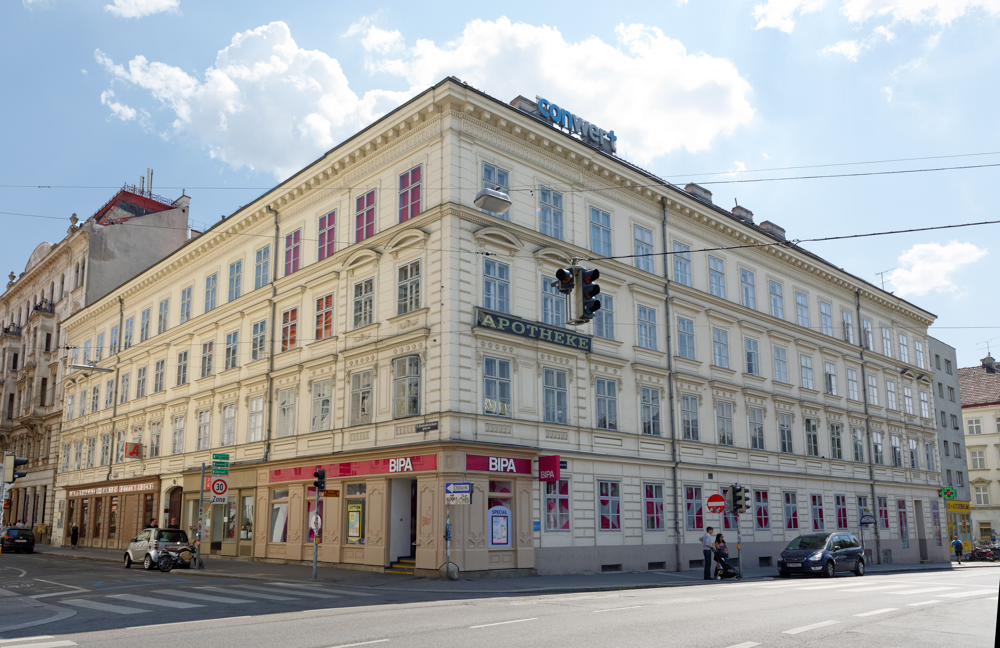

<section id="our-facility" class="our-facility-section">
  <div class="container text-center">
    <div class="teachers mt-3">
      <!-- trainer section starts -->
      <p class="fs-1 header">Your Trainers</p>

      <!-- first trainer starts -->

      <div class="row justify-content-evenly align-items-center mt-5">
        <div class="col-xxl-3 col-md-5 col-sm-12">
          <div class="image-container">
            
          </div>
        </div>
        <div class="col-xxl-8 col-lg-8 col-md-12">
          <p class="fs-4">
            Meet Serri, a seasoned web developer and passionate trainer with
            years of experience in HTML, CSS, JavaScript, and modern frameworks.
            Serri excels at breaking down complex concepts into simple,
            actionable steps, empowering learners to build professional-grade
            websites and applications. His engaging teaching style and industry
            insights make him a trusted mentor for aspiring developers.
          </p>
        </div>
      </div>

      <!-- first trainer ends -->

      <!-- second trainer starts -->

      <div class="row justify-content-evenly align-items-center mt-5">
        <div class="col-xxl-8 col-lg-8 col-md-12">
          <p class="fs-4">
            Hassan is a talented web developer and an experienced trainer known
            for his expertise in HTML, CSS, JavaScript, and modern frameworks.
            With a knack for simplifying complex topics, Hassan helps learners
            gain practical skills and confidence to build professional-grade
            websites. His passion for teaching and real-world experience make
            him a standout mentor for aspiring developers.
          </p>
        </div>
        <div class="col-xxl-3 col-md-5 col-sm-12">
          <div class="image-container">
            
          </div>
        </div>
      </div>
    </div>

    <!-- second trainer ends -->

    <!-- trainer section ends -->

    <!-- facility section starts -->

    <div class="facility mt-5">
      <p class="fs-1 header">Our Facility</p>

      <!-- first facility part starts -->
      <div class="row justify-content-evenly align-items-center mt-5 mb-4">
        <div class="col-xxl-4 col-lg-4 col-md-8">
          <div class="image-container">
            
          </div>
        </div>
        <div class="col-xxl-8 col-lg-8">
          <p class="fs-4">
            We are very happy about our facility in Kettenbrückengasse 23,
            Vienna. Located in the vibrant 6th district, it’s the perfect spot
            for a coding learning center. With excellent public transport
            connections and the inspiring energy of the nearby Naschmarkt, this
            location fosters creativity and collaboration. Its blend of classic
            Viennese charm and modern amenities creates an ideal environment for
            learning and growth in tech
          </p>
        </div>
      </div>

      <!-- first facility part ends -->

      <!-- second facility part starts -->

      <div class="row justify-content-evenly align-items-center mt-5 mb-4">
        <div class="col-xxl-8 col-lg-8">
          <p class="fs-4">
            Our facility in Vienna is designed with comfort and functionality in
            mind. The modern, welcoming interior creates an inspiring atmosphere
            where students can focus and thrive. We offer state-of-the-art
            hardware, including high-performance computers and the latest
            software, ensuring that our learners have the best tools to succeed
            in their coding journey. Whether you're working on a personal
            project or collaborating with peers, our comfortable environment and
            top-notch equipment support a seamless learning experience
          </p>
        </div>
        <div class="col-xxl-4 col-lg-4 col-md-8 col-sm-12">
          <div class="image-container">
            
          </div>
        </div>
      </div>

      <!-- second facility part ends -->
    </div>

    <!-- facility section ends -->
  </div>
</section>
